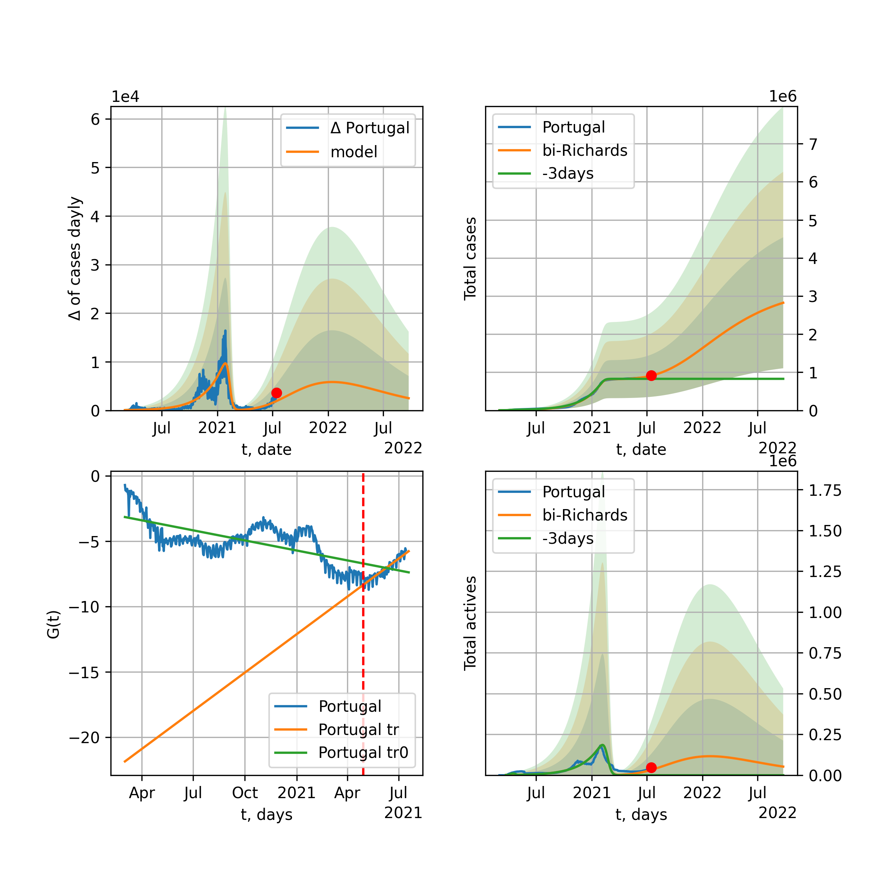

Multi-logistic model of COVID-19 dynamics
Model, code, results
Project maintained by algmaknick Hosted on GitHub Pages — Theme by mattgraham
World

World data at: 2020-06-17
+3 day model MAPE: 0.005320
model: bi-Richards
coeffs: [ 9.53763403e+06 1.73290398e+00 -3.02214481e+01 1.90995627e-02]
S.Korea scenario coeffs: [0.36242246, 2.56241634, 1.84890887, 0.13324732]
rational stdev: 0.083913
forecast at the end of period: +549 days
deltaDaycases: 5193
total cases: 17602126 ± 1477044
total death: 945193 ± 237941
bi-Richards approximation splitting point: 50
trend coefficient of determination: 0.843547
intercept: -2.343074
slope: -0.033672
trend coefficient of determination: 0.486167
intercept: -3.717219
slope: -0.007527
European Union

European Union data at: 2020-06-17
+3 day model MAPE: 0.004119
model: bi-Richards
coeffs: [ 2.03226907e+05 4.93556405e+00 -2.52500383e+01 9.17909808e-03]
rational stdev: 0.597679
forecast at the end of period: +31 days
deltaDaycases: 746
total cases: 1268971 ± 758438
total death: 134200 ± 240625
bi-Richards approximation splitting point: 83
trend coefficient of determination: 0.943415
intercept: -1.112375
slope: -0.057406
trend coefficient of determination: 0.002158
intercept: -5.702105
slope: -0.001679
Brazil

Brazil data at: 2020-06-17
+3 day model MAPE: 0.001100
model: logisticQ
coeffs: [ 1.49504539e+06 5.35779013e-06 9.10873752e+01 -1.31431197e+04]
S.Korea scenario coeffs: [0.35416971, 0.02606324, 4.35859408, 19.30413219]
rational stdev: 0.375903
forecast at the end of period: +409 days
deltaDaycases: 357
total cases: 2014444 ± 757235
total death: 97889 ± 110390
trend coefficient of determination: 0.913005
intercept_: -4.7647600790605775
coeffs_: [ 0. -0.229577 0.00110917]

Brazil data at: 2020-06-17
+3 day model MAPE: 0.006436
model: Richards
coeffs: [1.68058634e+06 7.54769387e-02 8.23353957e+01 7.90244240e-01]
S.Korea scenario coeffs: [0.36242246, 2.56241634, 1.84890887, 0.13324732]
rational stdev: 0.324945
forecast at the end of period: +479 days
deltaDaycases: 23
total cases: 2288525 ± 743645
total death: 111208 ± 108409
trend coefficient of determination: 0.844902
intercept: -6.939034
slope: -0.083622
Russia

Russia data at: 2020-06-17
+3 day model MAPE: 0.011048
model: Richards
coeffs: [ 7.27696132e+05 2.59340423e+00 -5.89867625e+01 1.49432962e-02]
S.Korea scenario coeffs: [0.36242246, 2.56241634, 1.84890887, 0.13324732]
rational stdev: 0.174163
forecast at the end of period: +549 days
deltaDaycases: 97
total cases: 984036 ± 171383
total death: 13299 ± 6948
trend coefficient of determination: 0.966892
intercept: -1.523771
slope: -0.033897
USA

USA data at: 2020-06-17
+3 day model MAPE: 0.007259
model: bi-Richards
coeffs: [ 1.23665741e+06 3.26767700e+00 -2.78800768e+01 1.21348154e-02]
rational stdev: 0.183053
forecast at the end of period: +143 days
deltaDaycases: 113
total cases: 2847191 ± 521187
total death: 152830 ± 83928
bi-Richards approximation splitting point: 65
trend coefficient of determination: 0.952745
intercept: -1.125630
slope: -0.051021
trend coefficient of determination: 0.616911
intercept: -3.405838
slope: -0.013876
Spain

Spain data at: 2020-06-17
+3 day model MAPE: 0.000481
model: Richards
coeffs: [ 2.93701700e+05 9.21414400e+00 -5.37964647e+01 6.58835495e-03]
S.Korea scenario coeffs: [0.36242246, 2.56241634, 1.84890887, 0.13324732]
rational stdev: 0.236003
forecast at the end of period: +269 days
deltaDaycases: 132
total cases: 393585 ± 92887
total death: 36606 ± 25917
trend coefficient of determination: 0.965248
intercept: -0.721041
slope: -0.060570
Italy

Italy data at: 2020-06-17
+3 day model MAPE: 0.000585
model: bi-Richards
coeffs: [-4.33668796e+02 -3.38298010e+01 9.05768773e+01 1.23082600e-02]
S.Korea scenario coeffs: [0.36242246, 2.56241634, 1.84890887, 0.13324732]
rational stdev: 0.802919
forecast at the end of period: +31 days
deltaDaycases: 19
total cases: 237676 ± 190834
total death: 34426 ± 82923
bi-Richards approximation splitting point: 97
trend coefficient of determination: 0.985583
intercept: -1.117949
slope: -0.056851
trend coefficient of determination: 0.000426
intercept: -6.781582
slope: -0.001174
United Kingdom

United Kingdom data at: 2020-06-17
+3 day model MAPE: 0.001204
model: Richards
coeffs: [ 3.18332568e+05 4.08160318e+00 -6.37083941e+01 1.13007939e-02]
S.Korea scenario coeffs: [0.36242246, 2.56241634, 1.84890887, 0.13324732]
rational stdev: 0.140450
forecast at the end of period: +339 days
deltaDaycases: 190
total cases: 420951 ± 59122
total death: 59295 ± 24983
trend coefficient of determination: 0.974497
intercept: -1.397385
slope: -0.044975
France

France data at: 2020-06-17
+3 day model MAPE: 0.000200
model: bi-Richards
coeffs: [2.05029958e+04 3.99567105e+00 2.89433208e+01 1.82063263e-02]
rational stdev: 0.187184
forecast at the end of period: +31 days
deltaDaycases: 45
total cases: 162733 ± 30461
total death: 30427 ± 17086
bi-Richards approximation splitting point: 82
trend coefficient of determination: 0.895505
intercept: -0.906561
slope: -0.068900
trend coefficient of determination: 0.014841
intercept: -7.208060
slope: 0.010536
Germany

Germany data at: 2020-06-17
+3 day model MAPE: 0.047444
model: bi-Richards
coeffs: [1.13242993e+04 1.72560056e+01 1.12417697e+01 4.96489125e-03]
rational stdev: 0.138934
forecast at the end of period: +45 days
deltaDaycases: 4
total cases: 190386 ± 26451
total death: 8936 ± 3724
bi-Richards approximation splitting point: 94
trend coefficient of determination: 0.950737
intercept: -1.409987
slope: -0.061073
trend coefficient of determination: 0.474967
intercept: -27.603413
slope: 0.217714
Turkey

Turkey data at: 2020-06-17
+3 day model MAPE: 0.014200
model: bi-Richards
coeffs: [ 5.38090114e+04 4.79844137e+00 -5.90440768e+00 1.00780107e-02]
rational stdev: 0.208123
forecast at the end of period: +45 days
deltaDaycases: 252
total cases: 209684 ± 43640
total death: 5578 ± 3482
bi-Richards approximation splitting point: 75
trend coefficient of determination: 0.777741
intercept: -0.970883
slope: -0.058016
trend coefficient of determination: 0.205896
intercept: -6.233884
slope: 0.011973
Iran

Iran data at: 2020-06-17
+3 day model MAPE: 0.003645
model: bi-Richards
coeffs: [1.46604703e+05 2.06976542e+00 1.65776902e+01 2.31188907e-02]
S.Korea scenario coeffs: [0.36242246, 2.56241634, 1.84890887, 0.13324732]
rational stdev: 0.275722
forecast at the end of period: +423 days
deltaDaycases: 69
total cases: 297785 ± 82105
total death: 14022 ± 11598
bi-Richards approximation splitting point: 75
trend coefficient of determination: 0.949163
intercept: -0.985373
slope: -0.056238
trend coefficient of determination: 0.086091
intercept: -4.102483
slope: -0.003729
Canada

Canada data at: 2020-06-17
+3 day model MAPE: 0.000801
model: Richards
coeffs: [ 1.10153059e+05 3.17912484e+00 -7.12661820e+01 1.32641389e-02]
S.Korea scenario coeffs: [0.36242246, 2.56241634, 1.84890887, 0.13324732]
rational stdev: 0.165776
forecast at the end of period: +420 days
deltaDaycases: 31
total cases: 147849 ± 24510
total death: 12221 ± 6077
trend coefficient of determination: 0.978629
intercept: -1.571932
slope: -0.044500
Belgium

Belgium data at: 2020-06-17
+3 day model MAPE: 0.001886
model: Richards
coeffs: [ 5.99728093e+04 6.10992271e+00 -4.48867850e+01 1.07790433e-02]
S.Korea scenario coeffs: [0.36242246, 2.56241634, 1.84890887, 0.13324732]
rational stdev: 0.558316
forecast at the end of period: +255 days
deltaDaycases: 19
total cases: 80832 ± 45130
total death: 12981 ± 21742
trend coefficient of determination: 0.960312
intercept: -1.271419
slope: -0.056226
Peru

Peru data at: 2020-06-17
+3 day model MAPE: 0.014230
model: Richards
coeffs: [4.75653417e+05 2.46251864e-01 1.49478204e+01 1.25386003e-01]
S.Korea scenario coeffs: [0.36242246, 2.56241634, 1.84890887, 0.13324732]
rational stdev: 0.296651
forecast at the end of period: +759 days
deltaDaycases: 18
total cases: 646332 ± 191735
total death: 19469 ± 17326
trend coefficient of determination: 0.845755
intercept: -2.029144
slope: -0.036431
Netherlands

Netherlands data at: 2020-06-17
+3 day model MAPE: 0.000889
model: bi-Richards
coeffs: [5.18920780e+03 6.44406607e+00 3.46538249e+01 1.19137057e-02]
rational stdev: 0.135155
forecast at the end of period: +31 days
deltaDaycases: 20
total cases: 51259 ± 6928
total death: 6327 ± 2565
bi-Richards approximation splitting point: 75
trend coefficient of determination: 0.960841
intercept: -0.829874
slope: -0.062160
trend coefficient of determination: 0.051869
intercept: -5.232501
slope: -0.005958
India

India data at: 2020-06-17
+3 day model MAPE: 0.006148
model: Richards
coeffs: [ 3.06929039e+06 2.39405993e-01 -2.44500566e+00 7.24950600e-02]
S.Korea scenario coeffs: [0.36242246, 2.56241634, 1.84890887, 0.13324732]
rational stdev: 0.367173
forecast at the end of period: +1039 days
deltaDaycases: 689
total cases: 4058553 ± 1490189
total death: 135504 ± 149260
trend coefficient of determination: 0.728279
intercept: -1.977237
slope: -0.023314
Switzerland

Switzerland data at: 2020-06-17
+3 day model MAPE: 0.001468
model: logisticQ
coeffs: [ 3.04435022e+04 5.53024974e-07 2.62733881e+01 -2.51996142e+05]
rational stdev: 0.315911
forecast at the end of period: +59 days
deltaDaycases: 0
total cases: 30443 ± 9617
total death: 1909 ± 1809
trend coefficient of determination: 0.981766
intercept_: -4.147659714313123
coeffs_: [ 0. -0.28687375 0.00150458]
Ecuador

Ecuador data at: 2020-06-17
+3 day model MAPE: 0.009169
model: Richards
coeffs: [ 5.80945468e+04 2.31071478e+00 -7.39525885e+01 1.43615788e-02]
S.Korea scenario coeffs: [0.36242246, 2.56241634, 1.84890887, 0.13324732]
rational stdev: 0.338909
forecast at the end of period: +619 days
deltaDaycases: 7
total cases: 78490 ± 26601
total death: 6486 ± 6594
trend coefficient of determination: 0.200299
intercept: -2.199232
slope: -0.033792
Portugal

Portugal data at: 2020-06-17
+3 day model MAPE: 0.000569
model: bi-Richards
coeffs: [ 2.50020952e+04 1.62091214e+00 -3.01294731e+01 2.03497501e-02]
rational stdev: 0.054851
forecast at the end of period: +199 days
deltaDaycases: 1
total cases: 53129 ± 2914
total death: 2147 ± 353
bi-Richards approximation splitting point: 61
trend coefficient of determination: 0.904736
intercept: -1.215049
slope: -0.070461
trend coefficient of determination: 0.035623
intercept: -5.340754
slope: 0.003993
Saudi Arabia

Saudi Arabia data at: 2020-06-17
+3 day model MAPE: 0.038429
model: Richards
coeffs: [ 3.19728591e+05 7.73846387e-01 -5.34915575e+01 3.07573579e-02]
S.Korea scenario coeffs: [0.36242246, 2.56241634, 1.84890887, 0.13324732]
rational stdev: 0.246705
forecast at the end of period: +437 days
deltaDaycases: 323
total cases: 348042 ± 85863
total death: 2688 ± 1989
trend coefficient of determination: 0.233872
intercept: -2.138299
slope: -0.018185
Sweden

Sweden data at: 2020-06-17
+3 day model MAPE: 0.005301
model: bi-Richards
coeffs: [2.96147713e+04 1.93620612e-01 9.31875638e+01 4.15625029e-01]
rational stdev: 0.239478
forecast at the end of period: +94 days
deltaDaycases: 10
total cases: 76684 ± 18364
total death: 7084 ± 5089
bi-Richards approximation splitting point: 80
trend coefficient of determination: 0.872551
intercept: -3.121651
slope: -0.074558
trend coefficient of determination: 0.000008
intercept: -8.559791
slope: 0.000136
Pakistan

Pakistan data at: 2020-06-17
+3 day model MAPE: 0.001832
model: bi-logisticQ
coeffs: [ 7.12875585e+05 5.49611809e-06 1.26293235e+02 -9.53521686e+03]
S.Korea scenario coeffs: [0.35416971, 0.02606324, 4.35859408, 19.30413219]
rational stdev: 0.390482
forecast at the end of period: +633 days
deltaDaycases: 49
total cases: 963820 ± 376354
total death: 18618 ± 21809
bi-logisticQ approximation splitting point: 20
trend coefficient of determination: 0.391568
intercept_: -3.9808806978581046
coeffs_: [ 0. -0.04620278 -0.00453428]
trend coefficient of determination: 0.962554
intercept_: -5.612409157870719
coeffs_: [ 0. -0.15387067 0.00062863]
Pakistan

Pakistan data at: 2020-06-17
+3 day model MAPE: 0.001503
model: Richards
coeffs: [2.42272385e+07 8.59799810e-02 9.80132833e+01 1.32627330e-01]
S.Korea scenario coeffs: [0.36242246, 2.56241634, 1.84890887, 0.13324732]
rational stdev: 0.377808
forecast at the end of period: +1739 days
deltaDaycases: 2755
total cases: 32268659 ± 12191346
total death: 623333 ± 706499
trend coefficient of determination: 0.583724
intercept: -2.609919
slope: -0.023012
Ireland

Ireland data at: 2020-06-17
+3 day model MAPE: 0.001845
model: logisticQ
coeffs: [ 2.49187262e+04 9.45310000e-07 3.60483713e+01 -1.25553710e+05]
S.Korea scenario coeffs: [0.35416971, 0.02606324, 4.35859408, 19.30413219]
rational stdev: 0.295525
forecast at the end of period: +101 days
deltaDaycases: 37
total cases: 33075 ± 9774
total death: 2231 ± 1977
trend coefficient of determination: 0.978577
intercept_: -4.278599822590579
coeffs_: [ 0. -0.23005205 0.00098874]
Mexico

Mexico data at: 2020-06-17
+3 day model MAPE: 0.002345
model: Richards
coeffs: [ 6.69305892e+05 3.08601687e-01 -2.91656179e+01 6.65038910e-02]
S.Korea scenario coeffs: [0.36242246, 2.56241634, 1.84890887, 0.13324732]
rational stdev: 0.190146
forecast at the end of period: +899 days
deltaDaycases: 125
total cases: 893364 ± 169869
total death: 106671 ± 60849
trend coefficient of determination: 0.910904
intercept: -2.231581
slope: -0.025419
Singapore

Singapore data at: 2020-06-17
+3 day model MAPE: 0.010726
model: bi-Richards
coeffs: [ 3.61916907e+04 5.37982187e+00 -1.95890402e+01 7.89882893e-03]
S.Korea scenario coeffs: [0.36242246, 2.56241634, 1.84890887, 0.13324732]
rational stdev: 0.260736
forecast at the end of period: +339 days
deltaDaycases: 60
total cases: 53031 ± 13827
total death: 33 ± 25
bi-Richards approximation splitting point: 60
trend coefficient of determination: 0.125285
intercept: -2.319051
slope: -0.021616
trend coefficient of determination: 0.572825
intercept: 0.381748
slope: -0.038505
Chile

Chile data at: 2020-06-16
+3 day model MAPE: 0.039877
model: Richards
coeffs: [2.64440373e+05 6.15368879e-02 6.48295665e+01 1.60598763e+00]
S.Korea scenario coeffs: [0.36242246, 2.56241634, 1.84890887, 0.13324732]
rational stdev: 0.116806
forecast at the end of period: +172 days
deltaDaycases: 249
total cases: 352632 ± 41189
total death: 6467 ± 2266
trend coefficient of determination: 0.983270
intercept: -16.178942
slope: -0.091258
Israel

Israel data at: 2020-06-17
+3 day model MAPE: 0.012607
model: bi-Richards
coeffs: [4.32037698e+03 8.74600488e+00 4.40469044e+01 1.31096496e-02]
rational stdev: 0.134782
forecast at the end of period: +17 days
deltaDaycases: 34
total cases: 21074 ± 2840
total death: 322 ± 130
bi-Richards approximation splitting point: 70
trend coefficient of determination: 0.928329
intercept: -1.008047
slope: -0.092570
trend coefficient of determination: 0.503507
intercept: -13.041074
slope: 0.091219
Austria

Austria data at: 2020-06-17
+3 day model MAPE: 0.002153
model: bi-Richards
coeffs: [ 2.12656890e+03 8.99927133e+00 -2.71632871e+01 6.62536680e-03]
rational stdev: 0.385829
forecast at the end of period: +31 days
deltaDaycases: 2
total cases: 17326 ± 6685
total death: 691 ± 799
bi-Richards approximation splitting point: 65
trend coefficient of determination: 0.933078
intercept: -1.066725
slope: -0.092189
trend coefficient of determination: 0.124367
intercept: -4.286678
slope: -0.026367
Belarus

Belarus data at: 2020-06-17
+3 day model MAPE: 0.004792
model: Richards
coeffs: [ 7.50704659e+04 2.41450161e+00 -7.78822397e+01 1.50958108e-02]
S.Korea scenario coeffs: [0.36242246, 2.56241634, 1.84890887, 0.13324732]
rational stdev: 0.179273
forecast at the end of period: +479 days
deltaDaycases: 27
total cases: 99952 ± 17918
total death: 577 ± 310
trend coefficient of determination: 0.939545
intercept: -1.738962
slope: -0.038430
Japan

Japan data at: 2020-06-17
+3 day model MAPE: 0.005374
model: bi-Richards
coeffs: [2.11927838e+03 1.14925613e+01 2.48006031e+01 4.77840824e-03]
rational stdev: 0.700180
forecast at the end of period: +24 days
deltaDaycases: 11
total cases: 18010 ± 12610
total death: 951 ± 1997
bi-Richards approximation splitting point: 115
trend coefficient of determination: 0.000496
intercept: -3.624258
slope: -0.001364
trend coefficient of determination: 0.088868
intercept: -7.813572
slope: 0.013175
China

China data at: 2020-06-17
+3 day model MAPE: 0.000236
model: bi-Richards
coeffs: [1.22006222e+03 5.75856443e+01 4.48379959e+01 3.41899024e-03]
rational stdev: 0.100286
forecast at the end of period: +17 days
deltaDaycases: 0
total cases: 82993 ± 8323
total death: 4617 ± 1389
bi-Richards approximation splitting point: 110
trend coefficient of determination: 0.820998
intercept: -1.987616
slope: -0.082693
trend coefficient of determination: 0.120591
intercept: -15.981052
slope: 0.047551
Qatar

Qatar data at: 2020-06-17
+3 day model MAPE: 0.012828
model: bi-Richards
coeffs: [1.29181079e+05 1.28407933e-01 4.35486410e+01 3.33165596e-01]
S.Korea scenario coeffs: [0.36242246, 2.56241634, 1.84890887, 0.13324732]
rational stdev: 0.171803
forecast at the end of period: +633 days
deltaDaycases: 1
total cases: 176408 ± 30307
total death: 173 ± 89
bi-Richards approximation splitting point: 20
trend coefficient of determination: 0.054328
intercept: -5.666762
slope: 0.031690
trend coefficient of determination: 0.942036
intercept: -3.870053
slope: -0.042869
Poland

Poland data at: 2020-06-17
+3 day model MAPE: 0.008939
model: bi-Richards
coeffs: [ 2.28038750e+04 2.86953499e+00 -1.47201469e+01 1.45816062e-02]
rational stdev: 0.119620
forecast at the end of period: +129 days
deltaDaycases: 2
total cases: 41579 ± 4973
total death: 1741 ± 624
bi-Richards approximation splitting point: 60
trend coefficient of determination: 0.715343
intercept: -1.174888
slope: -0.047802
trend coefficient of determination: 0.355424
intercept: -3.148053
slope: -0.013015
UAE

UAE data at: 2020-06-17
+3 day model MAPE: 0.013191
model: Richards
coeffs: [ 6.33613424e+04 3.24212179e-01 -4.40502064e+00 1.02025069e-01]
S.Korea scenario coeffs: [0.36242246, 2.56241634, 1.84890887, 0.13324732]
rational stdev: 0.206470
forecast at the end of period: +633 days
deltaDaycases: 4
total cases: 85914 ± 17738
total death: 584 ± 361
trend coefficient of determination: 0.005671
intercept: -5.050333
slope: 0.006420
Romania

Romania data at: 2020-06-17
+3 day model MAPE: 0.002994
model: bi-Richards
coeffs: [2.53803565e+05 2.84847613e-01 6.06526825e+01 8.07300182e-02]
rational stdev: 0.148066
forecast at the end of period: +255 days
deltaDaycases: 90
total cases: 270974 ± 40122
total death: 17275 ± 7673
bi-Richards approximation splitting point: 82
trend coefficient of determination: 0.930894
intercept: -1.595670
slope: -0.050954
trend coefficient of determination: 0.186684
intercept: -7.087716
slope: 0.017317
Panama

Panama data at: 2020-06-17
+3 day model MAPE: 0.019583
model: bi-Richards
coeffs: [3.10069843e+04 3.18204848e+00 1.62618368e+01 1.67563635e-02]
rational stdev: 0.227089
forecast at the end of period: +87 days
deltaDaycases: 19
total cases: 44127 ± 10020
total death: 917 ± 624
bi-Richards approximation splitting point: 70
trend coefficient of determination: 0.874329
intercept: -1.294588
slope: -0.048451
trend coefficient of determination: 0.264057
intercept: -5.363003
slope: 0.018919
Ukraine

Ukraine data at: 2020-06-17
+3 day model MAPE: 0.003070
model: bi-Richards
coeffs: [7.54959323e+04 4.42227495e-01 4.68615396e+01 8.84488357e-02]
rational stdev: 0.173061
forecast at the end of period: +234 days
deltaDaycases: 0
total cases: 102791 ± 17789
total death: 2916 ± 1513
bi-Richards approximation splitting point: 65
trend coefficient of determination: 0.732197
intercept: -1.692970
slope: -0.049418
trend coefficient of determination: 0.036297
intercept: -5.186567
slope: 0.004140
Indonesia

Indonesia data at: 2020-06-17
+3 day model MAPE: 0.021499
model: Richards
coeffs: [ 1.84927620e+05 7.41560213e-01 -1.63835762e+02 1.90249213e-02]
S.Korea scenario coeffs: [0.36242246, 2.56241634, 1.84890887, 0.13324732]
rational stdev: 0.243306
forecast at the end of period: +1207 days
deltaDaycases: 48
total cases: 240862 ± 58603
total death: 13231 ± 9657
trend coefficient of determination: 0.761965
intercept: -2.182530
slope: -0.022758
Bangladesh

Bangladesh data at: 2020-06-17
+3 day model MAPE: 0.000066
model: bi-Richards
coeffs: [ 9.11755975e+05 4.61973120e-01 -4.79827646e+01 3.74648459e-02]
S.Korea scenario coeffs: [0.36242246, 2.56241634, 1.84890887, 0.13324732]
rational stdev: 0.404816
forecast at the end of period: +927 days
deltaDaycases: 419
total cases: 1160188 ± 469662
total death: 15372 ± 18668
bi-Richards approximation splitting point: 29
trend coefficient of determination: 0.032496
intercept: -4.315082
slope: 0.049869
trend coefficient of determination: 0.816171
intercept: -1.222864
slope: -0.027517
South_Korea

South Korea data at: 2020-06-17
+3 day model MAPE: 0.002232
model: bi-Richards
coeffs: [ 6.26725581e+03 2.54488583e+00 -1.31718726e+02 7.48511642e-03]
rational stdev: 0.161617
forecast at the end of period: +129 days
deltaDaycases: 11
total cases: 16056 ± 2595
total death: 366 ± 177
bi-Richards approximation splitting point: 73
trend coefficient of determination: 0.865676
intercept: -1.332547
slope: -0.089436
trend coefficient of determination: 0.499903
intercept: -9.920841
slope: 0.038555
Moldova

Moldova data at: 2020-06-17
+3 day model MAPE: 0.017597
model: bi-Richards
coeffs: [ 3.53686246e+04 1.53989705e+00 -3.51186904e+01 1.75627459e-02]
S.Korea scenario coeffs: [0.36242246, 2.56241634, 1.84890887, 0.13324732]
rational stdev: 0.365247
forecast at the end of period: +297 days
deltaDaycases: 1
total cases: 41677 ± 15222
total death: 1417 ± 1552
bi-Richards approximation splitting point: 60
trend coefficient of determination: 0.531945
intercept: -1.491972
slope: -0.038918
trend coefficient of determination: 0.000297
intercept: -3.973933
slope: 0.000545
Denmark

Denmark data at: 2020-06-17
+3 day model MAPE: 0.002296
model: bi-Richards
coeffs: [ 1.40166359e+03 3.20232581e+00 -4.06839125e+00 1.24829834e-02]
rational stdev: 0.266187
forecast at the end of period: +80 days
deltaDaycases: 3
total cases: 13440 ± 3577
total death: 653 ± 521
bi-Richards approximation splitting point: 90
trend coefficient of determination: 0.894324
intercept: -1.481027
slope: -0.049208
trend coefficient of determination: 0.001001
intercept: -5.715198
slope: -0.002863
Serbia

Serbia data at: 2020-06-17
+3 day model MAPE: 0.004007
model: bi-Richards
coeffs: [ 6.10565145e+03 2.16100756e+00 -6.80211482e+01 1.25793683e-02]
rational stdev: 0.128893
forecast at the end of period: +115 days
deltaDaycases: 7
total cases: 16160 ± 2083
total death: 331 ± 127
bi-Richards approximation splitting point: 50
trend coefficient of determination: 0.682192
intercept: -1.207109
slope: -0.048878
trend coefficient of determination: 0.293324
intercept: -3.589138
slope: -0.021767
Kuwait

Kuwait data at: 2020-06-17
+3 day model MAPE: 0.013554
model: Richards
coeffs: [4.10982227e+04 9.46946020e-02 6.98584346e+01 9.44005097e-01]
S.Korea scenario coeffs: [0.36242246, 2.56241634, 1.84890887, 0.13324732]
rational stdev: 0.323448
forecast at the end of period: +178 days
deltaDaycases: 40
total cases: 54603 ± 17661
total death: 445 ± 431
trend coefficient of determination: 0.954671
intercept: -6.564513
slope: -0.075672
Philippines

Philippines data at: 2020-06-17
+3 day model MAPE: 0.016226
model: Richards
coeffs: [ 1.76952930e+05 6.03288228e-01 -2.22723141e+02 1.78728369e-02]
S.Korea scenario coeffs: [0.36242246, 2.56241634, 1.84890887, 0.13324732]
rational stdev: 0.360497
forecast at the end of period: +1515 days
deltaDaycases: 46
total cases: 226884 ± 81791
total death: 9229 ± 9981
trend coefficient of determination: 0.545621
intercept: -2.117744
slope: -0.025637
Norway

Norway data at: 2020-06-17
+3 day model MAPE: 0.001018
model: bi-Richards
coeffs: [5.89745428e+02 2.96009398e+00 1.56925006e+01 1.76347891e-02]
rational stdev: 0.151799
forecast at the end of period: +31 days
deltaDaycases: 3
total cases: 8877 ± 1347
total death: 248 ± 112
bi-Richards approximation splitting point: 90
trend coefficient of determination: 0.939859
intercept: -0.947778
slope: -0.069188
trend coefficient of determination: 0.009936
intercept: -7.631552
slope: 0.009142
Czechia

Czechia data at: 2020-06-17
+3 day model MAPE: 0.002649
model: bi-Richards
coeffs: [ 3.36246164e+03 3.45577834e+00 -1.96561291e+01 1.26934219e-02]
rational stdev: 1.031757
forecast at the end of period: +59 days
deltaDaycases: 4
total cases: 11166 ± 11520
total death: 365 ± 1129
bi-Richards approximation splitting point: 59
trend coefficient of determination: 0.398915
intercept: -1.473249
slope: -0.054724
trend coefficient of determination: 0.021151
intercept: -4.969426
slope: -0.004214
Colombia

Colombia data at: 2020-06-17
+3 day model MAPE: 0.016031
model: bi-Richards
coeffs: [ 2.17549660e+05 5.37652620e-01 -1.27729099e+01 4.74261500e-02]
S.Korea scenario coeffs: [0.36242246, 2.56241634, 1.84890887, 0.13324732]
rational stdev: 0.182807
forecast at the end of period: +689 days
deltaDaycases: 86
total cases: 290762 ± 53153
total death: 9500 ± 5210
bi-Richards approximation splitting point: 40
trend coefficient of determination: 0.765202
intercept: -1.124576
slope: -0.068147
trend coefficient of determination: 0.410191
intercept: -3.050363
slope: -0.007694
Australia

Australia data at: 2020-06-17
+3 day model MAPE: 0.002404
model: bi-Richards
coeffs: [ 1.11388031e+03 6.56903129e+00 -5.61516797e+01 7.18793988e-03]
rational stdev: 0.679640
forecast at the end of period: +31 days
deltaDaycases: 1
total cases: 7390 ± 5022
total death: 102 ± 207
bi-Richards approximation splitting point: 50
trend coefficient of determination: 0.755169
intercept: -0.973520
slope: -0.083474
trend coefficient of determination: 0.085167
intercept: -5.672598
slope: -0.010892
Malaysia

Malaysia data at: 2020-06-17
+3 day model MAPE: 0.003613
model: bi-Richards
coeffs: [2.10436342e+03 1.28794496e-01 8.22677694e+01 1.03987346e+00]
S.Korea scenario coeffs: [0.36242246, 2.56241634, 1.84890887, 0.13324732]
rational stdev: 0.144121
forecast at the end of period: +59 days
deltaDaycases: 2
total cases: 8683 ± 1251
total death: 123 ± 53
bi-Richards approximation splitting point: 70
trend coefficient of determination: 0.809783
intercept: -5.888980
slope: -0.137480
trend coefficient of determination: 0.272358
intercept: -10.619918
slope: -0.045723
Dominican Republic

Dominican Republic data at: 2020-06-17
+3 day model MAPE: 0.015055
model: Richards
coeffs: [ 4.60308718e+04 1.54577707e+00 -1.15531190e+02 1.39843865e-02]
S.Korea scenario coeffs: [0.36242246, 2.56241634, 1.84890887, 0.13324732]
rational stdev: 0.384667
forecast at the end of period: +913 days
deltaDaycases: 7
total cases: 61698 ± 23733
total death: 1620 ± 1869
trend coefficient of determination: 0.027234
intercept: -3.121439
slope: -0.007350
Egypt

Egypt data at: 2020-06-17
+3 day model MAPE: 0.013367
model: logisticQ
coeffs: [ 1.42413286e+05 1.36548471e-05 9.40894110e+01 -4.00481546e+03]
S.Korea scenario coeffs: [0.35416971, 0.02606324, 4.35859408, 19.30413219]
rational stdev: 0.213718
forecast at the end of period: +514 days
deltaDaycases: 7
total cases: 192570 ± 41155
total death: 7238 ± 4640
trend coefficient of determination: 0.973170
intercept_: -7.759008450490916
coeffs_: [ 0. -0.11156332 0.00048079]
Finland

Finland data at: 2020-06-17
+3 day model MAPE: 0.001384
model: Richards
coeffs: [ 7.42445753e+03 6.29484659e-01 -2.22695530e+01 7.93580147e-02]
S.Korea scenario coeffs: [0.36242246, 2.56241634, 1.84890887, 0.13324732]
rational stdev: 0.151477
forecast at the end of period: +311 days
deltaDaycases: 2
total cases: 9994 ± 1513
total death: 457 ± 207
trend coefficient of determination: 0.874106
intercept: -1.773102
slope: -0.055577
Morocco

Morocco data at: 2020-06-17
+3 day model MAPE: 0.004529
model: bi-Richards
coeffs: [-239.29523628 0.25851044 65.08424244 16.77365207]
rational stdev: 0.077193
forecast at the end of period: +73 days
deltaDaycases: 1
total cases: 9530 ± 735
total death: 225 ± 52
bi-Richards approximation splitting point: 70
trend coefficient of determination: 0.866397
intercept: -83.604627
slope: -1.246517
trend coefficient of determination: 0.789896
intercept: -146.349344
slope: -0.118820
Argentina

Argentina data at: 2020-06-17
+3 day model MAPE: 0.031842
model: Richards
coeffs: [3.72082243e+04 4.55222980e-02 8.07387922e+01 2.70879789e+01]
S.Korea scenario coeffs: [0.36242246, 2.56241634, 1.84890887, 0.13324732]
rational stdev: 0.185251
forecast at the end of period: +199 days
deltaDaycases: 0
total cases: 50693 ± 9390
total death: 1301 ± 723
trend coefficient of determination: 0.969814
intercept: -178.873818
slope: -1.261945
Algeria

Algeria data at: 2020-06-17
+3 day model MAPE: 0.004845
model: logisticQ
coeffs: [ 1.23795983e+04 1.37959198e-06 4.92598336e+01 -4.37357356e+04]
S.Korea scenario coeffs: [0.35416971, 0.02606324, 4.35859408, 19.30413219]
rational stdev: 0.246372
forecast at the end of period: +255 days
deltaDaycases: 2
total cases: 16668 ± 4106
total death: 1181 ± 872
trend coefficient of determination: 0.957030
intercept_: -6.897772790383966
coeffs_: [ 0. -0.14147188 0.00073042]
Luxembourg

Luxembourg data at: 2020-06-17
+3 day model MAPE: 0.002128
model: bi-Richards
coeffs: [1.94476033e+02 2.27797490e+01 1.38721891e+00 3.91630865e-03]
rational stdev: 0.244316
forecast at the end of period: +17 days
deltaDaycases: 0
total cases: 4073 ± 995
total death: 109 ± 79
bi-Richards approximation splitting point: 75
trend coefficient of determination: 0.627895
intercept: -1.677430
slope: -0.070863
trend coefficient of determination: 0.073512
intercept: -9.342034
slope: 0.024323
Thailand

Thailand data at: 2020-06-17
+3 day model MAPE: 0.001614
model: bi-Richards
coeffs: [ 2.40301956e+02 6.21608962e+00 -4.69876942e+01 7.05055695e-03]
rational stdev: 0.075642
forecast at the end of period: +45 days
deltaDaycases: 0
total cases: 3221 ± 243
total death: 59 ± 13
bi-Richards approximation splitting point: 60
trend coefficient of determination: 0.843263
intercept: -1.243966
slope: -0.117536
trend coefficient of determination: 0.004529
intercept: -6.821334
slope: -0.011834
Hungary

Hungary data at: 2020-06-17
+3 day model MAPE: 0.001269
model: Richards
coeffs: [ 4.18610211e+03 2.40424538e+00 -3.59260103e+01 2.31807294e-02]
S.Korea scenario coeffs: [0.36242246, 2.56241634, 1.84890887, 0.13324732]
rational stdev: 0.412047
forecast at the end of period: +171 days
deltaDaycases: 9
total cases: 5036 ± 2075
total death: 700 ± 865
trend coefficient of determination: 0.908967
intercept: -1.223213
slope: -0.052823
Greece

Greece data at: 2020-06-17
+3 day model MAPE: 0.003978
model: bi-Richards
coeffs: [ 2.17738929e+03 4.65358819e+00 -2.67778063e+01 7.17145408e-03]
rational stdev: 0.136133
forecast at the end of period: +108 days
deltaDaycases: 3
total cases: 4950 ± 673
total death: 289 ± 118
bi-Richards approximation splitting point: 90
trend coefficient of determination: 0.837258
intercept: -1.196201
slope: -0.064317
trend coefficient of determination: 0.229728
intercept: -15.780848
slope: 0.100576
Iraq

Iraq data at: 2020-06-17
+3 day model MAPE: 0.192225
model: bi-Richards
coeffs: [2.73120724e+04 7.67578697e-02 6.86801977e+01 7.08117133e+00]
S.Korea scenario coeffs: [0.36242246, 2.56241634, 1.84890887, 0.13324732]
rational stdev: 0.132076
forecast at the end of period: +87 days
deltaDaycases: 11
total cases: 37152 ± 4907
total death: 1184 ± 469
bi-Richards approximation splitting point: 55
trend coefficient of determination: 0.959228
intercept: -51.980083
slope: -0.211325
trend coefficient of determination: 0.991111
intercept: -32.527812
slope: -0.560810
Croatia

Croatia data at: 2020-06-17
+3 day model MAPE: 0.000264
model: Richards
coeffs: [ 2.25295990e+03 8.35864252e+00 -3.77091019e+01 1.03916111e-02]
S.Korea scenario coeffs: [0.36242246, 2.56241634, 1.84890887, 0.13324732]
rational stdev: 0.523755
forecast at the end of period: +171 days
deltaDaycases: 0
total cases: 3040 ± 1592
total death: 144 ± 226
trend coefficient of determination: 0.867433
intercept: -0.834177
slope: -0.089138
Iceland

Iceland data at: 2020-06-17
+3 day model MAPE: 0.000236
model: logisticQ
coeffs: [ 1.80423823e+03 7.33839297e-06 1.33403368e+01 -2.40782332e+04]
rational stdev: 0.054030
forecast at the end of period: +24 days
deltaDaycases: 0
total cases: 1804 ± 97
total death: 9 ± 1
trend coefficient of determination: 0.927056
intercept_: -4.571790078050903
coeffs_: [ 0. -0.29118537 0.00172254]
Estonia

Estonia data at: 2020-06-17
+3 day model MAPE: 0.005500
model: Richards
coeffs: [1.74994618e+03 2.01777902e-01 4.40550518e+00 5.06367091e-01]
rational stdev: 0.144467
forecast at the end of period: +94 days
deltaDaycases: 0
total cases: 1749 ± 252
total death: 61 ± 26
trend coefficient of determination: 0.813896
intercept: -4.307388
slope: -0.102288
Bulgaria

Bulgaria data at: 2020-06-17
+3 day model MAPE: 0.009181
model: bi-Richards
coeffs: [-7.76351606e+02 1.06710056e-01 6.78734066e+01 7.18454969e+00]
rational stdev: 0.114685
forecast at the end of period: +199 days
deltaDaycases: 0
total cases: 6013 ± 689
total death: 312 ± 107
bi-Richards approximation splitting point: 55
trend coefficient of determination: 0.920590
intercept: -36.550978
slope: -0.448954
trend coefficient of determination: 0.649548
intercept: -54.855795
slope: -0.080371
New Zealand

New Zealand data at: 2020-06-17
+3 day model MAPE: 0.000367
model: logisticQ
coeffs: [ 1.49020423e+03 2.21705461e-06 2.50777698e+01 -1.07900372e+05]
S.Korea scenario coeffs: [0.35416971, 0.02606324, 4.35859408, 19.30413219]
rational stdev: 0.235417
forecast at the end of period: +59 days
deltaDaycases: 0
total cases: 2016 ± 474
total death: 29 ± 20
trend coefficient of determination: 0.908899
intercept_: -3.1099231071689957
coeffs_: [ 0. -0.21420855 0.00060004]
Slovenia

Slovenia data at: 2020-06-17
+3 day model MAPE: 0.000000
model: bi-Richards
coeffs: [-28.84257372 -12.50697446 -0.85910304 0.30782965]
rational stdev: 0.380182
forecast at the end of period: +31 days
deltaDaycases: 0
total cases: 1488 ± 565
total death: 107 ± 122
bi-Richards approximation splitting point: 75
trend coefficient of determination: 0.919366
intercept: -2.201607
slope: -0.108354
trend coefficient of determination: 0.382242
intercept: -18.491880
slope: 0.095551
Slovakia

Slovakia data at: 2020-06-17
+3 day model MAPE: 0.002372
model: Richards
coeffs: [1.52109569e+03 1.16938737e-01 2.55808257e+01 1.14750283e+00]
rational stdev: 0.212800
forecast at the end of period: +45 days
deltaDaycases: 0
total cases: 1521 ± 323
total death: 27 ± 17
trend coefficient of determination: 0.817560
intercept: -6.499033
slope: -0.115624
Lithuania

Lithuania data at: 2020-06-17
+3 day model MAPE: 0.000657
model: bi-Richards
coeffs: [ 4.44155253e+02 2.38072591e+00 -1.97861585e+01 1.98931750e-02]
rational stdev: 0.147841
forecast at the end of period: +16 days
deltaDaycases: 2
total cases: 1839 ± 271
total death: 78 ± 34
bi-Richards approximation splitting point: 48
trend coefficient of determination: 0.874112
intercept: -0.924618
slope: -0.089586
trend coefficient of determination: 0.151322
intercept: -4.414066
slope: -0.016518
Latvia

Latvia data at: 2020-06-17
+3 day model MAPE: 0.002198
model: Richards
coeffs: [ 1.10324983e+03 9.95556543e+00 -7.80296290e+01 5.44592407e-03]
S.Korea scenario coeffs: [0.36242246, 2.56241634, 1.84890887, 0.13324732]
rational stdev: 0.240983
forecast at the end of period: +199 days
deltaDaycases: 2
total cases: 1365 ± 329
total death: 37 ± 26
trend coefficient of determination: 0.623490
intercept: -1.697956
slope: -0.055816
Cyprus

Cyprus data at: 2020-06-16
+3 day model MAPE: 0.004368
model: Richards
coeffs: [9.11933822e+02 3.20830854e-01 3.99756256e+00 3.34642778e-01]
rational stdev: 0.137523
forecast at the end of period: +4 days
deltaDaycases: 0
total cases: 908 ± 124
total death: 16 ± 6
trend coefficient of determination: 0.787995
intercept: -2.772129
slope: -0.090979
Malta

Malta data at: 2020-06-17
+3 day model MAPE: 0.012602
model: bi-Richards
coeffs: [181.70317051 0.28590637 56.47327421 0.53230087]
rational stdev: 0.200046
forecast at the end of period: +3 days
deltaDaycases: 0
total cases: 641 ± 128
total death: 8 ± 4
bi-Richards approximation splitting point: 50
trend coefficient of determination: 0.861999
intercept: -2.452218
slope: -0.137872
trend coefficient of determination: 0.153694
intercept: -6.632441
slope: -0.028409
Sri Lanka

Sri Lanka data at: 2020-06-17
+3 day model MAPE: 0.051591
model: Richards
coeffs: [2.23709622e+03 4.53140837e-02 6.31373021e+01 1.81633185e+00]
S.Korea scenario coeffs: [0.36242246, 2.56241634, 1.84890887, 0.13324732]
rational stdev: 0.113381
forecast at the end of period: +199 days
deltaDaycases: 0
total cases: 3014 ± 341
total death: 17 ± 5
trend coefficient of determination: 0.753177
intercept: -11.631126
slope: -0.085945
References
- Worldometers COVID-19 Coronavirus Pandemic
- Su COVID-19 susijusi gyventojų ir verslo statistika
- Bi-logistic growth
- Least squares
- scikit-learn
- scipy.org
- European Centre for Disease Prevention and Control An agency of the European Union
- Aaron Miller, Mac Josh Reandelar, Kimberly Fasciglione, Violeta Roumenova, Yan Li, Gonzalo H Otazu, Correlation between universal BCG vaccination policy and reduced morbidity and mortality for COVID-19: an epidemiological study, https://doi.org/10.1101/2020.03.24.20042937